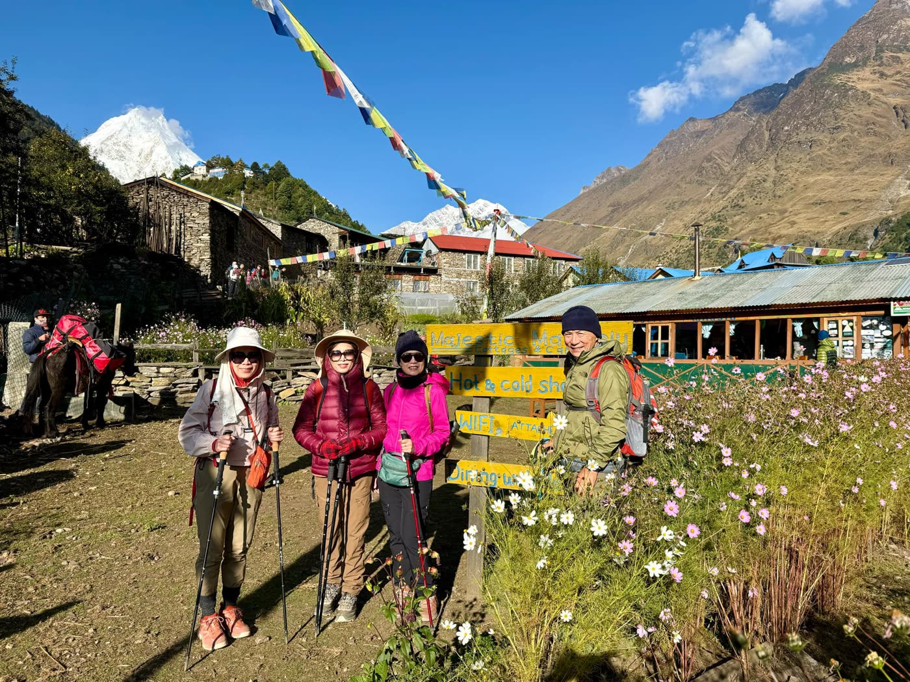
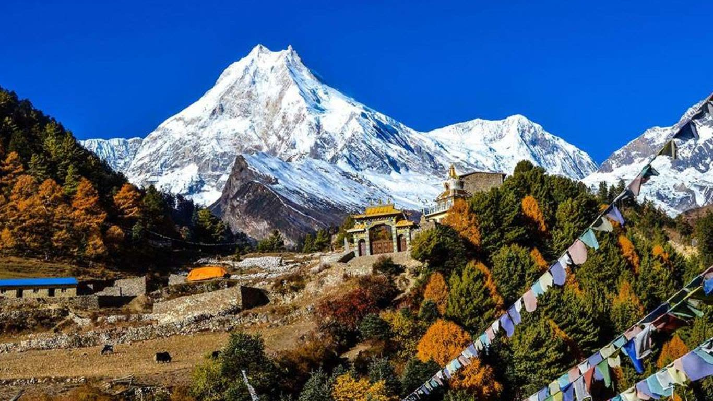
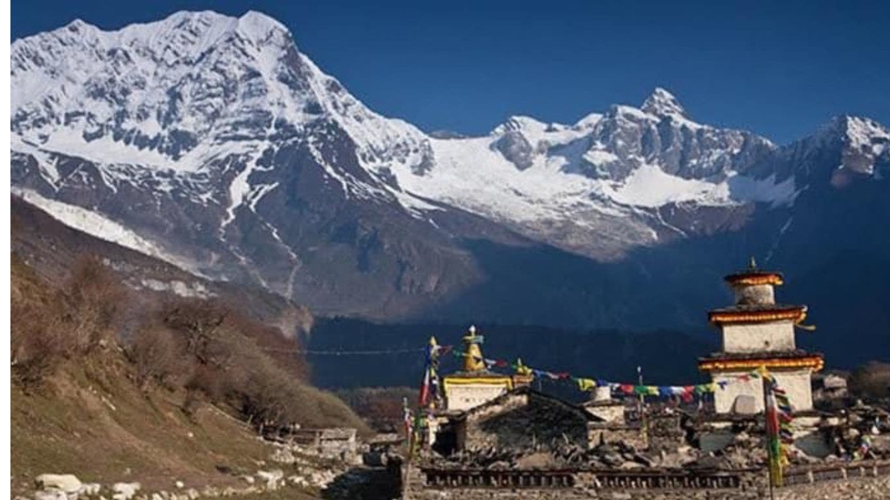
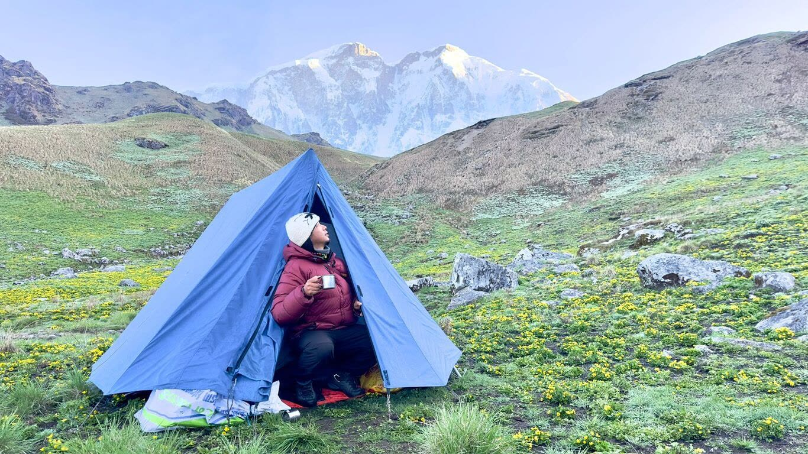
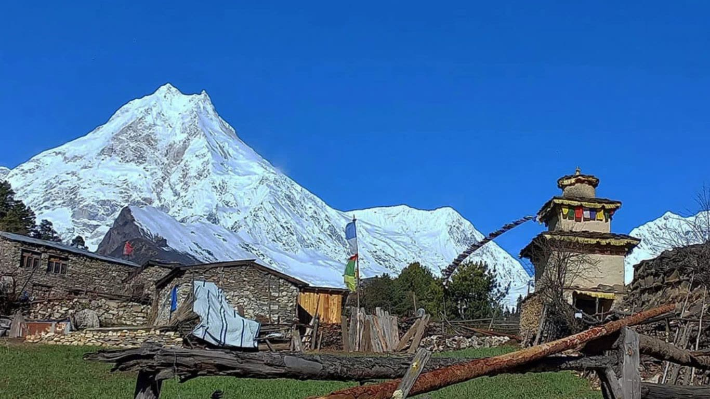
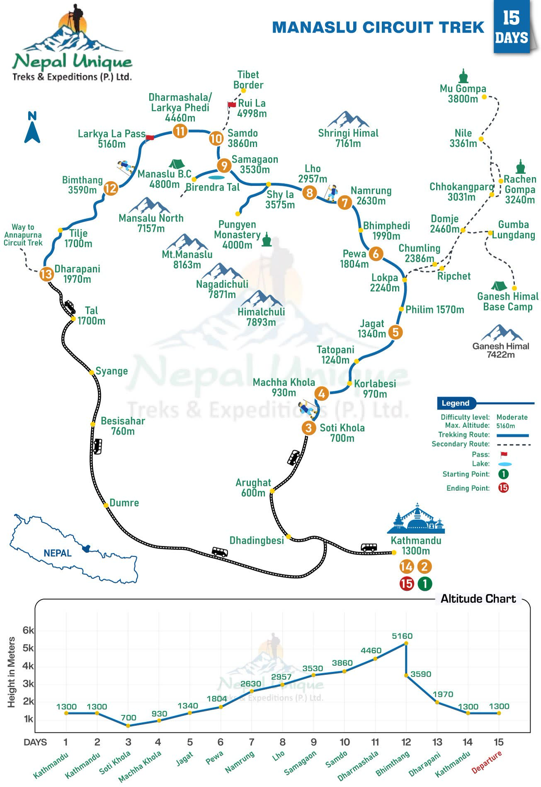

Manaslu Circuit Trek
The Manaslu Circuit Trek is one of the most spectacular and rewarding trekking adventures in Nepal, offering an authentic Himalayan experience away from the crowded Nepal trekking routes. Encircling the world's eighth-highest mountain, Mt.





Key Trip Facts
Trek Overview
Trip Highlights
Manaslu Circuit Trek Overview
The Manaslu Circuit Trek is one of the most spectacular and rewarding trekking adventures in Nepal, offering an authentic Himalayan experience away from the crowded Nepal trekking routes. Encircling the world's eighth-highest mountain, Mt. Manaslu (8,163m), this remarkable journey takes trekkers through remote mountain villages, ancient Buddhist monasteries, lush forests, glacial valleys, and high alpine landscapes before crossing the challenging Larke Pass (5,106m).
Known as one of the best alternatives to the Annapurna Circuit Trek, the Manaslu Circuit Trek combines natural beauty, cultural richness, and thrilling mountain scenery. The trail follows the Budhi Gandaki River through deep gorges and terraced farmlands before ascending into the pristine highlands of the Manaslu Conservation Area. Along the way, trekkers experience the unique traditions of Tibetan-influenced communities that have preserved their ancient lifestyle for centuries.
Trekking in Nepal offers many incredible destinations, but the Manaslu Circuit Trek Package stands out because of its untouched wilderness and fewer crowds. Unlike some of Nepal's more commercialized trekking routes, the Manaslu region provides a genuine connection with local culture and nature. The trail passes through traditional villages such as Machha Khola, Jagat, Namrung, Lho, Sama Gaun, and Samdo, each offering unique cultural experiences and breathtaking mountain views.
One of the highlights of the trek is spending time in Sama Gaun, a beautiful mountain settlement situated beneath the towering peaks of the Manaslu Himal. This village serves as an important acclimatization stop and gateway to the famous Manaslu Base Camp. A side trip to Manaslu Base Camp rewards trekkers with panoramic views of Mt. Manaslu, surrounding glaciers, and snow-covered Himalayan giants.
The crossing of the Larke Pass is often considered the most exciting part of the Manaslu Circuit Trek Itinerary. At an altitude of 5,106 meters, the pass offers magnificent views of Himlung Himal, Cheo Himal, Kang Guru, Annapurna II, and Mt. Manaslu itself. Reaching the top of the pass is a memorable achievement for trekkers seeking both adventure and stunning Himalayan scenery.
For travelers looking for a deeper cultural experience, the Tsum Valley with Manaslu Circuit Trek is an excellent option. This extended route explores the sacred Tsum Valley, a hidden Himalayan region known for its ancient monasteries, spiritual heritage, and unique Tibetan Buddhist culture. Combining the Tsum Valley with the Manaslu Circuit creates one of the most comprehensive trekking experiences in Nepal.
The Manaslu View Trek and short Manaslu Circuit Trek options are also becoming increasingly popular among travelers with limited time. These shorter itineraries allow trekkers to enjoy the beauty of the Manaslu region without completing the full circuit, making the area accessible to a wider range of adventurers.
The region is not only famous for trekking but also for Manaslu Expeditions. Every year, climbers from around the world visit Nepal to attempt to ascend Mt. Manaslu, drawn by its impressive height and challenging routes. Trekkers often have opportunities to meet expedition teams during the climbing season.
Since the Manaslu region lies within a protected area, trekkers must obtain special Manaslu Trek Permits before entering the restricted zone. The required permits generally include the Restricted Area Permit (RAP), Manaslu Conservation Area Permit (MCAP), and Annapurna Conservation Area Permit (ACAP). The cost of the Manaslu Trek permit varies depending on the season and the duration of the trek. As permit regulations may change, it is always recommended to check current requirements before planning your journey.
When planning a trek, many travelers ask about the Manaslu Circuit Trek cost and the Manaslu Trek cost. The overall cost depends on several factors, including trek duration, accommodation standards, transportation, guide and porter services, permits, and whether you choose a private or group trekking package. A typical Manaslu Circuit Trek package includes permits, licensed guides, accommodation, meals, transportation, and logistical support, making the trek safe and hassle-free.
The Manaslu Circuit Trek is ideal for trekkers seeking a combination of adventure, culture, and breathtaking Himalayan landscapes. From the remote villages of the Manaslu Conservation Area to the dramatic crossing of Larke Pass and the unforgettable views of Mt. Manaslu, this trek delivers an extraordinary experience that showcases the very best of hiking in Nepal.
Best Time to Do the Manaslu Circuit Trek
The best time to do the Manaslu Circuit Trek is during the spring (March to May) and autumn (September to November) seasons. These months offer stable weather, clear mountain views, comfortable trekking temperatures, and excellent trail conditions, making them ideal for trekking in Nepal.
Manaslu Circuit Trek in Spring (March to May)
Spring is one of the most popular seasons for the Manaslu Circuit Trek. During this period, the hills and forests of the Manaslu Conservation Area come alive with blooming rhododendrons, colorful wildflowers, and lush greenery. The weather is generally warm and pleasant at lower elevations, while higher regions such as Sama Gaun, Manaslu Base Camp, and Larke Pass remain cool and comfortable.
Spring also provides excellent visibility, allowing trekkers to enjoy stunning views of Mt. Manaslu, Himalchuli, Ngadi Chuli, Ganesh Himal, and the surrounding snow-capped peaks. The moderate temperatures and longer daylight hours make it easier to complete daily hikes and acclimatization excursions.
Manaslu Circuit Trek in Autumn (September to November)
Autumn is considered the peak trekking season in Nepal and is widely regarded as the best time for the Manaslu Circuit Trek. Following the summer monsoon, the skies become exceptionally clear, offering breathtaking panoramic views of the Himalayan range.
The temperatures are comfortable, rainfall is minimal, and the trails are dry and well-maintained. Villages along the Manaslu Circuit Trek itinerary, including Namrung, Lho, Sama Gaun, and Samdo, are particularly beautiful during this season. Trekkers can enjoy crystal-clear mountain vistas and favorable conditions while crossing the challenging Larke Pass (5,106m).
Autumn is also a great time to combine the Tsum Valley with the Manaslu Circuit Trek, as the weather remains stable throughout both regions.
Manaslu Circuit Trek in Winter (December to February)
Winter trekking in the Manaslu region is possible but more demanding. Temperatures can drop well below freezing at higher elevations, especially near Larke Pass and Manaslu Base Camp. Heavy snowfall may occasionally block the pass, causing route changes or delays.
However, winter offers peaceful trails, fewer trekkers, and spectacular snow-covered landscapes. Experienced trekkers who are well-prepared for cold conditions may find this season highly rewarding.
Manaslu Circuit Trek in Monsoon (June to August)
The summer monsoon season brings heavy rainfall to much of Nepal, making it the least popular time for hiking in Nepal. Lower sections of the Manaslu Circuit Trek can become muddy and slippery, while landslides may affect transportation and trail conditions.
On the positive side, the region becomes incredibly green and vibrant, and the trails are much quieter. Trekkers who choose to visit during this season should be prepared for changing weather conditions and limited mountain views.
Which Season is Best for the Manaslu Circuit Trek?
For most travelers, October is considered the best month to undertake the Manaslu Circuit Trek. The weather is stable, mountain visibility is outstanding, and trail conditions are excellent. April is another fantastic choice, offering beautiful spring scenery and comfortable temperatures.
Whether you choose spring or autumn, both seasons provide ideal conditions to experience the beauty of Mt. Manaslu, explore the traditional villages of the Manaslu Conservation Area, visit Sama Gaun and Manaslu Base Camp, and successfully cross the iconic Larke Pass. Selecting the right season will enhance your overall Manaslu Circuit Trek package and ensure an unforgettable adventure in the Himalayas.
Difficulty Level of Trek
The Manaslu Circuit Trek is considered a moderately difficult to challenging trek in Nepal due to its long duration, remote trails, and high-altitude crossing of Larke Pass (5,106m). Trekkers need to walk 6–8 hours daily on varied terrain, including steep ascents, rocky paths, and suspension bridges. The altitude gain is gradual but significant, requiring proper acclimatization to avoid altitude sickness. Previous trekking experience is helpful but not mandatory for fit and determined beginners. Good physical fitness, mental preparation, and basic endurance training are highly recommended. With proper guidance and a well-planned itinerary, the trek is achievable and highly rewarding.
Manaslu Circuit Trek Itinerary: Day by Day
15 Days program for Manaslu Circuit Trek. Daily timings and sequences remain flexible according to weather, flight operations, and group pace.
Day 1: Arrival in Kathmandu, Tribhuvan International Airport and transfer to the Hotel.
Approx. 1,345 m / 4,413 ft
Nepal, a beautiful destination for adventurous tourism, certainly showcases its pride right as you enter the border on the flight. In just a while you will be landing in the Tribhuwan International Airport, Kathmandu. Once you land at the airport, you will see our representatives waiting for you with a placeholder. Approach them and they will welcome you with a flower bouquet and then drive you to the hotel. At the hotel, they serve you a refreshing welcome drink before you check into your room and sleep for the night.
Day 2: Kathmandu Valley Sightseeing and Trekking Gear Preparation Day 1345 m
Approx. 1,345 m / 4,413 ft
How was your first night in the country of the Himalayas? Well, we believe that you had a perfect rest to forget all the jet lags you faced on your flight to Nepal. Well, today marks one of the most important days of the entire Manaslu Circuit Trekking Package. That is because you will meet the guides and they will describe the entire trip. After that, you have an entire day to spend on your way. However, we can also take you to a full-day Kathmandu Tour if you want. Furthermore, they will also make sure that you are prepared with all the necessary trekking gear required for the Manaslu Circuit Trek. On this day, the trekkers can visit some of the most significant destinations, including the Swayambhunath Stupa, Pashupatinath temple, and Bouddhanath Stupa. Moreover, you also have chances to squeeze through some bustling streets of Basantapur Durbar Square and Patan Durbar Square. Believe us when we say that this will be a perfect day out before such a long trek in the Manaslu Circuit. In the evening, you will return to the hotel for dinner and an overnight stay.
Day 3: Drive from Kathmandu to Soti Khola – 700 m / 2296 ft – 7 hrs
Approx. 700 m / 2,297 ft
Our adventurous journey to the Manaslu Circuit Trek begins with one of the most scenic drives from Kathmandu to Soti Khola. It takes about 7 hours for us to reach Soti Khola from Kathmandu in a private jeep. Well, the guides from Nepal Unique Treks & Expeditions pick you up early in the morning. Therefore, we recommend you stay prepared as soon as possible. Remember that we will drive you through some dusty and bumpy roads, even though it starts with a well-pitched road. However, the landscapes you see make the journey amazingly satisfying and worth experiencing. In between the drive, we will also stop several times for short breaks and meals. As you reach Soti Khola, our guides take you to the hotel or guesthouse, where you check in and get freshened up. After that, you will still have time to stroll around the village, interact with the locals, and take some cool oxygen in the Manaslu region. Well, the evening again, it's dinner time, but today, in the rather peaceful environment of Soti Khola. What after that? Nothing much! It's time to go for a sound and cozy sleep.
Day 4: Trek from Soti Khola to Machha Khola – 930 m / 3051 ft – 6 hrs
Approx. 930 m / 3,051 ft
It's time to get happy adrenaline-rush seekers! Do you know why? After three days of traveling, finally, it's a day we start trekking on the Manaslu Circuit Trekking map. This section of the Manaslu Circuit Trek begins early in the morning after you have a delicious breakfast in the hotel. In the beginning, we will cover some easier trail which ends after reaching a river. As we cross the river, the trail takes us deep into and across a beautiful forest before turning into a steep climb made of stone steps. We walk past some suspension bridges and smaller settlements before reaching Labubesi, a village where we stop for a fulfilling lunch. A little to eat and a little to rest before continuing on the journey around the Manaslu Circuit. Furthermore, you will also get to enjoy some mind-blowing views of Ganesh Himal and of course, the Manaslu Himal. We reach Machha Khola in the late afternoon, which means you have a whole evening to explore the village. Don't let this chance slip away, explore the village to its fullest. Need help interacting with the locals? Well, that's what our guides are there to help you with. In the evening, we request you to return to the hotel for another delicious dinner and a cozy sleep with some cool Himalayan breeze.
Day 5: Trek from Machha Khola to Jagat – 1340 m /4396 ft – 6 hrs
Approx. 1,340 m / 4,396 ft
We know that your excitement level is peaking as we are ascending higher on the Manaslu Circuit Trekking trail. Keep your excitement ascending higher as you ascend higher on the Manaslu Circuit Trek. That's because we have some amazing places to reach on the fifth day. Our journey for the day begins after you have your breakfast in the hotel. After that, the guides will lead you towards Jagat. Shortly after we leave Jagat, we will have to cross a short stream and enter a village named Khorla Besi. The walk continues and you keep gaining more altitude, more to walk, and more altitude to gain, until we finally reach Tatopani, a place for a quick break. Just imagine, a hot water spring in the lap of the Himalayas, that too, a natural hot water spring. Isn't that amazing? Yes, located at an altitude of 990 meters with a capacity for at least 300 people to dive at once, Tatopani certainly stands as an amusing site for everyone. A little more about Tatopani Besides being an amazing place to stop by for trekkers, Tatopani also stands as one of the major Hindu pilgrimage sites. Many people believe that taking a bath this spring cures several diseases related to skin and body joints, including gastritis, back pain, and stomach swelling. If you somehow go on this trek during September and April, you will see how significant this place is for the Hindu pilgrims. Yes, during these months, the site is full of Hindu people seeking just one chance to dive into the holy water of Tatopani, a Nepali name for hot water. Back to the Trek After spending some quality and relaxing time in Tatopani, we return to the Manaslu Circuit Trekking trail. Yes, if you remember, we still have a destination to reach and some distance to be covered within the day. From here, we will pass through several smaller villages like Bhinchet, Phaibang, Dungla, Rengbon, Maiku, Lhakpa, etc before finally reaching Jagat. Furthermore, this section of the trail also takes us past some landslide areas. So be careful! Follow the guides and listen to what they say! Because that's how safety is guaranteed. It takes about 6 hours for us to reach Jagat from Machha Khola while covering a total distance of 22 kilometers. Once you reach Jagat, check in at your hotel room, and freshen up, you will still have a handful of time to take some glimpses of this beautifully settled village.
Day 6: Trek from Jagat to Pewa – 1804 m / 5918 ft – 6 hrs
Approx. 1,804 m / 5,919 ft
Every day in this trek to the Manaslu Circuit welcomes a new adventure, a new thrill, and of course, some new experiences. On the sixth day, we will enter the restricted area of the Upper Manaslu region. However, before that, the authorized personnel check your Manaslu Restricted Area Permit. But, why shall you worry? Remember you are on this trek with Nepal Unique Treks and Expeditions, one of the most responsible trekking agencies in Nepal. We have already arranged the permit for you. Just show the permit and we will continue on the trail. After that, we need to ascend a little before crossing a bridge to reach Nagjet and Philim villages. From here, it feels like we enter a different world, a more peaceful one. Witnessing some unique sculptures, walking past the river banks and over the boulders, the trail takes us through some lush rhododendron and Himalayan pine forests. Well, don't forget to take your eyes to the scenes of some towering peaks. A little more to walk before we cross the Siyar Khola bridge and reach a junction. From here, the right trail takes us to the Tsum village, and the left one to Pewa. Of course, this is not the Manaslu Tsum Valley Trekking Package, otherwise, we would take the path on the right. We reach Pewa in the late afternoon, a beautifully-settled village at an altitude of 1804 meters above sea level. Also, let us spill a secret, this place has the best Khana set and Shillong achar throughout the entire Manaslu region trek. Enjoy the rest of the evening in front of the fireplace, talking about your journey before heading for a cozy and comfortable sleep in Pewa.
Day 7: Trek from Pewa to Namrung – 2630 m / 8628 ft – 6 hrs
Approx. 2,630 m / 8,629 ft
Wake up, freshen up, and have your breakfast! We wouldn't wake you up like that, but we certainly will request you to wake up a little early. That's because we need to cover an approximate distance of 14 kilometers. If you are even an average trekker, you will complete this section of the Manaslu Circuit Trek within 6 hours. However, if we start early, we will have enough time to rest in the evening and the walk will also be hassle-free. Starting with a thick bamboo forest to cross, the trail takes us to Deng village. However, in between the forest and the village, we have an uphill to cover as well. As we move forward from Deng, we will cross a suspension bridge and climb to the Rana and Bihi Phedi villages. Well, before we move any further, remember that the upcoming section of the trek in the Manaslu region passes through several landslide areas. Therefore, be attentive, follow the guides, and stay together. Once we safely cross the landslide zone, a short ascend takes us to Namrung village. However, let us tell you this will not be as easy as it looks. Why? Well, because we need to walk on a zigzag and uneven path for almost an hour before reaching Namrung. However, once you reach this village, the numerous tea shops, a restaurant, and some rest houses stay ready to serve you with some delicacies along with cozy resting space. So, the whole day's walk finally turns out to be worth it. A village with the best accommodation, food, and facilities, along with the cool sensation and views of the mighty Himalayas. What more should someone need to spend a night?
Day 8: Trek from Namrung to Lho – 2957 m / 9701 ft – 4 hrs
Approx. 2,957 m / 9,701 ft
Today, we have some good news for the tired trekkers! Well, we will only walk for about an hour on the eighth day, which is today. So, you will have plenty of time to rest in the evening. However, the trek starts as usual, in the morning, after having breakfast. From this part of the Manaslu Circuit Trekking map, you start noticing Tibetan-influenced lifestyle, settlements, and culture. Due to that reason, you will also notice some Mani Walls, local Gompas, and people wearing Tibetan dresses. Talking about the natural side of the trail, we need to walk past some lush rhododendron, fir, and oak trees while passing through this section of the Manaslu Circuit Trekking trail. A walk beside the Budi Gandaki River takes you on a slow, gradual climb to the Lho Gaon. During the last section of this day's walk, you will notice some summer settlements of the cattle herders. After that, we finally reach the Lho Gaon, a village with an outstanding picturesque view of the Manaslu peak. This will certainly be a treat for your eyes. In the evening, we will have dinner and stay overnight in Lho gaon before ascending any further on the Manaslu Circuit Trek.
Day 9: Trek from Lho to Sama Gaun – 3530 m / 11581 ft – 4 hrs
Approx. 3,530 m / 11,581 ft
Another day when the trekker only had to walk for 5 hours. Less time to walk but too much adventure and memories to capture, that's exactly what this section of the Manaslu Circuit Trek looks like. The trail begins with a slow and steady walk past some glorious morning views of the Himalayas and the surrounding environment. We pass through different settlements deep inside the Manaslu region before reaching Shyala, where we stop for a break and lunch. Well, this section of the trail around Manaslu Circuit takes us past some lush and dense rhododendron and pine forests as many of the sections do. Well, not just short, this section of the trail is also easy and less strenuous compared to any other day. Therefore, you can stroll around the Sama Gaon, interact with the locals, and try to understand their cultures and traditions once you reach the village. As usual, we will have a delicious and fulfilling dinner and cozy sleep at night.
Day 10: Acclimatization Day (Day Trip to Manaslu Base Camp or Pungyen Gompa)
Approx. 3,530 m / 11,581 ft
After 9 days of walking in the wilderness of the Manaslu Circuit Trekking map, we have finally reached a point where we take an acclimatization day. As this trek mostly happened below the altitude of 3000 meters up until now, we did not need acclimatization or a rest day. However, now that we have ascended over 3500 meters of altitude, our bodies need time to adapt to the temperature and weather conditions. Therefore, we will not ascend any further on the Manaslu Circuit Trekking route on this day. Instead, the guides take you for some quick yet amazing hikes. Yes, you have two options: either the hike to Pungyen Gompa or a hike to the Manaslu Base Camp. In both cases, it's your win because the hike will help you adapt to the higher altitude and prevent the chances of altitude sickness as well. Hike to Pungyen Gompa Are you someone who thinks it is better to go for a relaxing hike full of cultural sights on this day? In that case, the quick hike to the Pungyen Gompa works perfectly for you. Located at an altitude of 4050 meters above sea level, this secluded Buddhist monastery offers a charming, peaceful, and highly religious vibe. Moreover, you will also find yourself surrounded by yak pastures, and prayer flags, and witness outstanding views of the Manaslu range. Overall, it will be a 4 to 5 hours of hike (ascend to return). Believe us, this hike stands as a haven for those who want a relaxing day to spend. Hike to Manaslu Base Camp Well, you did not fall in the first category? Do you have a spirit that says booking a trekking package means experiencing some adrenaline rush and adventure? Well, we have the hike to Manaslu Base Camp for you. This hike, taking you to an altitude of 4800 meters above sea level, stands as an exhilarating option for acclimatization. Just imagine being surrounded by the panoramic views of Mt. Manaslu along with glaciers and towering icefalls. Aren't you in the Himalayas to see that? Didn't you book the Manaslu Circuit Trek package to go for some real adventure? If so, we will surely take you on this hike.
Day 11: Samdo to Dharmasala – 4460 m / 14632 ft – 4 hrs
Approx. 4,460 m / 14,633 ft
Well, we have almost reached the end of the 15-Day Manaslu Circuit Trek. However, before starting the descending journey, we still have one high-altitude destination to reach. That is none other than Dharmashala, a village located at an altitude of 4460 meters above sea level. So, what makes this spot significant? The main thing certainly is the altitude it stands on, and secondly, it offers an amazing place to prepare and relax for the Larkya La Pass ascend on the twelfth day of the trek. We set off on the walk to Dharmasala after having a delicious and fulfilling breakfast in Samdo. Well, the trail starts with a gentle climb where we walk along the Larke Khola's bank. Remember to keep looking everywhere while walking so that you do not miss the extensive yak pastures, isolated stone huts, and breathtaking views of the towering Himalayas. The closer we reach Dharmasala, the more rugged the trail becomes. Moreover, you will also notice less vegetation and more barren land in the topmost part of the trail. it only takes 4 hours for us to reach Dharmasala, a village famously known as Larke Phedi (Larke's Base), where we get amazing cool breezes, eye-soothing views, and of course, a different experience. Immerse yourself in the amusing experience of delving deep into the higher altitude and spend a night here in Dharmasala.
Day 12: Dharmasala to Bimthang via Larkya Pass – 3590 m / 11778 ft – 10 hrs
Approx. 3,590 m / 11,778 ft
Well, well, well! Here we are, finally on the day when we reach the Larkya Pass. Isn't this the most awaited and anticipated part of the entire Manaslu Circuit Trekking route? Aren't you excited? However, we request you to stay calm and peaceful because that helps a lot in high altitude ascend. As we have some real struggles to do and some high terrain to conquer, we will start the day's trek at around 3 to 4 A.M. Therefore, we request the trekkers to be ready with trekking poles and headlamps. Remember that this is the longest and the most demanding trail of the entire Manaslu Circuit Trek. Therefore, we request the trekkers to cooperate and be responsible from their side as well. Regarding the trail, you need not worry because our guides will navigate you. However, you must follow the instructions and advance accordingly. If you notice, the more you walk, the steeper and more rugged the trail becomes. Moreover, as the morning sun slowly rises, we will be passing some glacial moraines and frozen lakes. Throughout this amazing hike to Larkya Pass (5,106m / 16,752ft) from Dharmasala, the spectacular views of Himlung Himal, Kang Guru, Annapurna II, and the Manaslu range never leave your sight, not even for a second. At the top of the Larkya Pass, we do not spend much time due to the extreme temperature and climatic conditions. Therefore, after some time, we go for a long descent to Bimthang. As we slowly descend, we notice the icy path left behind and a grassy green valley with pine forests approaching ahead. At Bimthang, the trekkers go for a much-needed rest after such a difficult ascend to the Larkya Pass before returning from the Manaslu Circuit Trekking route.
Day 13: Bimthang to Dharapani – 1970 m / 6463 ft – 7 hrs
Approx. 1,970 m / 6,463 ft
After such a tiring yet adventurous trek around the Manaslu Circuit, we have finally concluded. Yes, you have reached the highest point and gained some lifetime experience. Immersing in the wilderness of the remote Manaslu region, walking through some off-the-beaten-path trails, the trekkers certainly had some real fun for sure. However, it's now time to descend on the Manaslu Circuit Trekking route and we start that with a descent from Bimthang to Dharapani. It takes about 7 hours for us to descend through this 22-kilometer-long trail. What does the trial offer? Well, the journey starts with a breathtaking sunrise view of the Manaslu and Annapurna ranges, taking us through alpine meadows and dense rhododendron forests. Moreover, the trekkers also sense the air getting warmer and the landscapes turning into lush green valleys. What more? Well, some eye-pleasing views of different waterfalls and chances to visit different villages. A little more to walk past Gho and Tilije villages, traditional Gurung settlements, finally take us to the warm and cozy Dharapani. Once we reach Dharapani, you get a chance to rest for the last day before waving a final goodbye to the Manaslu trekking region. Take your time to explore the village, interact with the locals, and enjoy the evening in Dharapani. At night, you will have the last dinner in the Manaslu region before spending the last night in this region.
Day 14: Dharapani to Kathmandu (Drive) Kathmandu – 1300 m / 4265 ft – 10 hrs
Approx. 1,345 m / 4,413 ft
Finally, we are on the second last day of the Manaslu Circuit Trekking package, which brings the final drive from Dharapani to Kathmandu. Do you remember that scenic and adventurous drive that we had from Kathmandu to Soti Khola on the first day? This drive will be almost similar, but take us in a reverse experience from what we had on the first day. A 10-hour-long drive on some rough and mostly well-pitched road takes us to Kathmandu. In Kathmandu, our guides drop you at your hotel, where you can have a handful of rest after checking in. After resting and freshening yourself up in the hotel room, we recommend you go for a quick and exciting stroll in the nearby areas. In the evening, the Nepal Unique Treks and Expeditions team invites you for a delicious and authentic farewell dinner. Moreover, we will also have a certificate-giving ceremony. This certificate indicates the successful accomplishment of the Manaslu Circuit Trek adventure. Well, spend your last day in Nepal before returning to your home country.
Day 15: Departure to international Airport from Hotel.
Approx. 1,345 m / 4,413 ft
How did the adventurous trek in the Manaslu Circuit go? We strongly believe that our guides and staff members exceeded your expectations and helped you enjoy the wilderness of the Manaslu region. However, after a beautiful, adventurous, and insightful journey in the Manaslu Circuit, the package finally comes to an end. On the fifteenth day, also the last day of this trek, our representatives pick you up from the hotel and drive you to the Tribhuwan International Airport. Well, that's it! We bid a final farewell to the trekkers with a strong belief of meeting again for another Himalayan adventure.
What is Included (Regular Trek Package)
What is Excluded
What is Included (Luxury Manaslu Circuit Trek Package)
What is Excluded
Booking Dates & Availability
Packing List for Manaslu Circuit Trek
Essential Info: Down jackets and sleeping bags can be rented/arranged per package inclusions.High-Altitude Trail Gear (6 items)
Cold-Weather Layering System (5 items)
Sleep, Health & Permits (3 items)
Read before you book: Manaslu Circuit Trek
Practical logistics derived directly from this package's route facts, inclusions, and elevation profile.
Accommodation & Meals (Hotel, Lodge & Tea House)
Accommodation follows the package grade (Hotel, Lodge & Tea House) in Kathmandu and along the Manaslu route. Check your package Includes section for included meals and Kathmandu hotel nights.
Permits & Local Logistics
Transportation is arranged via Private Car, sharing jeep. Applicable permits listed in the package inclusions are arranged by Nepal Unique Treks prior to departure.
Route Difficulty & Elevation (5,110 m)
Manaslu Circuit Trek is rated Adventurous with a maximum elevation of 5,110 m. Follow your guide's pacing and stay hydrated throughout the 15 Days itinerary.
Best Time to Visit (Spring, Monsoon and Autumn)
Recommended operating season on the source page: Spring, Monsoon and Autumn. Additional official notes from the source page follow below.
Traveller Useful Information
Manaslu Circuit Trek Cost (2026 Guide)
The Manaslu Circuit Trek cost varies depending on the duration, services, group size, and level of comfort you choose. Since this trek lies in a restricted region of Nepal, it requires special permits, a licensed guide, and a minimum of two trekkers, which makes it slightly more expensive than other trekking routes. However, the experience of trekking around Mt. Manaslu, crossing Larke Pass, and exploring remote Himalayan villages makes it absolutely worth the investment.
Average Manaslu Circuit Trek Cost
On average, the Manaslu Circuit Trek costs range from USD 900 to USD 1,500 per person for a standard 14–16 day itinerary. Luxury or private packages can cost more depending on the services included.
What is Included in the Trek Cost?
A typical Manaslu Circuit Trek package usually includes:
- Kathmandu airport transfers
- Hotel accommodation in Kathmandu (before and after trek)
- Required trekking permits (MCAP, ACAP, RAP)
- Licensed trekking guide
- Porter service (shared between 2 trekkers)
- Meals during the trek (breakfast, lunch, dinner)
- Tea house accommodation during the trek
- Transportation (Kathmandu–Machha Khola and Dharapani–Kathmandu)
- Manaslu Trek Permits Cost
Since the region is restricted, permits are a major part of the total cost:
- Restricted Area Permit (RAP): USD 100 per week (Sep–Nov), USD 75 per week (Dec–Aug)
- Manaslu Conservation Area Permit (MCAP): USD 30 per person
- Annapurna Conservation Area Permit (ACAP): USD 30 per person
The Manaslu Trek permit cost may vary slightly depending on government regulations.
Extra Costs to Consider
While most essentials are included in a package, trekkers should budget for:
- Personal travel insurance (mandatory for high-altitude trekking)
- Snacks, drinks, and hot showers
- WiFi and charging fees at tea houses
- Tips for the guide and porter
- Extra accommodation in Kathmandu if needed
- Factors That Affect Manaslu Circuit Trek Cost
Several factors influence the total price of the trek:
- Group size (solo vs group joining)
- Trekking season (peak season may cost more)
- Type of service (standard, budget, or luxury)
- Itinerary length and side trips (like Tsum Valley with Manaslu Circuit Trek)
- Private guide and porter arrangements
Why the Cost is Worth It
Although the Manaslu Circuit Trek cost is higher than some other routes in Nepal, it offers unmatched value. You experience untouched Himalayan wilderness, authentic Tibetan-influenced culture, dramatic landscapes, and the thrill of crossing Larke Pass. It is one of the most rewarding adventures in trekking in Nepal.
The Manaslu Circuit Trek package is ideal for trekkers seeking a remote, less crowded, and culturally rich Himalayan journey. With proper planning and the right trekking agency, you can enjoy a safe, well-organized, and unforgettable experience in the Manaslu Conservation Area.
The Manaslu Circuit Trek offers not only stunning natural beauty but also a rich cultural experience. As you trek through the villages, you’ll encounter the unique culture and traditions of the Tibetan-influenced communities who reside in this remote part of Nepal. The area is home to ethnic groups like the Gurungs, Tamangs, and Tibetans, each contributing to a rich cultural tapestry that has been preserved for generations. Here’s a look at some of the festivals and cultural experiences you can enjoy on the trek.
Tibetan Festivals
Given its proximity to Tibet, the Manaslu region has strong Tibetan cultural influences, especially in the higher-altitude villages. The people here celebrate Tibetan Buddhist festivals, such as Losar, the Tibetan New Year, which usually takes place in February or March. This festival is celebrated with traditional dances, prayers, music, and feasts, offering an opportunity to witness the region’s deep spiritual practices. The Buddhist monasteries along the trek, like those in Samagaun and Sama, are important centers for local festivals and rituals.
Another significant festival is the Saga Dawa, which honors the birth, enlightenment, and death of Buddha. The celebration typically involves ritual prayers, offerings, and processions. If you’re trekking during one of these festivals, you’ll have a chance to participate in or observe these spiritual practices.
Dashain and Tihar
The two most important Hindu festivals celebrated in the lower regions of the trek, where Gurung and Tamang communities live, are Dashain and Tihar. Dashain, usually celebrated in September or October, marks the victory of good over evil and involves family gatherings, sacrifices, and feasts. Similarly, Tihar, also known as the Festival of Lights, is celebrated in October or November, with people lighting oil lamps, decorating homes with rangoli (colorful patterns), and honoring animals like dogs and cows.
Cultural Immersion
Beyond festivals, the daily life of locals offers a fascinating cultural experience. As you pass through villages like Bihi, Namrung, and Lho, you’ll observe traditional farming, animal husbandry, and ancient crafts like weaving and wood carving. The trekking route also leads you through ancient gompas (monasteries) and chortens, which are integral to the spiritual life of the region.
Locals are generally friendly and welcoming, eager to share their culture and traditions with trekkers. You may even have the chance to share a cup of butter tea (a Tibetan specialty) or partake in a traditional meal at a teahouse, which typically includes dal bhat (rice and lentils), momos, and Thukpa (noodle soup).
The Manaslu Circuit Trek offers a wonderful opportunity to immerse yourself in the unique festivals, cultural practices, and daily life of the people who live in one of Nepal’s most remote and beautiful regions. Trekking through this area is not only a physical challenge but also an enriching cultural journey that allows you to witness ancient traditions and the strong spiritual and community ties that define this Himalayan region.
Standing as the trek’s highest point, Larkya La Pass offers awe-inspiring views of Mount Manaslu and the surrounding Himalayan giants. Crossing this pass is both a physical challenge and a rewarding achievement, with snow-covered trails and dramatic vistas that make every step worthwhile.
The Manaslu region is steeped in Tibetan Buddhist traditions, which are evident in its ancient monasteries, prayer wheels, and vibrant prayer flags. Villages like Samagaon and Lho are cultural hubs where the rhythmic chants of monks and the scent of burning juniper create a serene, spiritual atmosphere.
Unlike the popular Everest and Annapurna routes, the Manaslu Circuit Trek remains relatively untouched by mass tourism. This allows trekkers to enjoy peaceful trails, pristine landscapes, and a deeper connection with nature and local communities.
Staying in local teahouses offers a genuine taste of Himalayan hospitality. These rustic lodgings provide cozy accommodations and hearty meals, giving trekkers a chance to connect with locals and experience their way of life.
The Manaslu region is home to diverse wildlife, including Himalayan tahr, marmots, and pika. If you’re lucky, you might even spot the elusive snow leopard, adding an element of excitement to your journey.
Interact with the Nuri and Tibetan communities, learning about their traditions, crafts, and daily life. Gain insights into their Buddhist practices, agricultural methods, and warm, welcoming hospitality.
The Manaslu Circuit Trek is considered a challenging trek due to its high altitude, remote trails, and unpredictable weather conditions. It is not as commercialized as the Everest or Annapurna regions, making it a more rugged and adventurous experience. Trekkers need to be physically fit, mentally prepared, and well-equipped to complete this journey successfully.
One of the primary challenges is the altitude gain, as the trek takes you from Soti Khola to the highest point at Larkya La Pass (5,106 meters). The oxygen level decreases significantly at higher elevations, increasing the risk of altitude sickness. Proper acclimatization and a slow ascent are essential to avoid serious health issues. Additionally, the trek requires long walking hours, with daily hikes ranging from 5 to 8 hours on rough, steep, and sometimes landslide-prone trails.
The terrain itself is demanding, with steep ascents, rocky paths, and narrow suspension bridges crossing deep river gorges. The Larkya La Pass crossing is the most difficult section, requiring a pre-dawn start to avoid strong winds and potential snowfall. The pass remains icy, making the descent on the other side equally strenuous.
Another difficulty is the lack of modern infrastructure along the route. The region is still relatively remote, with basic teahouses and limited facilities. Higher elevations have fewer food options, limited electricity, and no road access, meaning all supplies are carried by mules or porters. Trekkers must be self-sufficient, prepared for unpredictable weather, and mentally ready for isolation.
Despite these challenges, the Manaslu Circuit Trek is rewarding, offering breathtaking mountain views, cultural immersion, and a true wilderness experience. With proper preparation, physical training, and careful planning, trekkers can complete this trek successfully and enjoy one of Nepal’s most pristine and untouched trekking routes.
Transportation for the Manaslu Circuit Trek primarily involves a combination of road travel since there are no direct flights to the trailhead. The trek starts in Soti Khola or Machha Khola, both accessible by road from Kathmandu.
Kathmandu to Soti Khola/Machha Khola
Most trekkers take a private jeep or a public bus from Kathmandu to reach the starting point.
Private Jeep: This is the best option for comfort and flexibility. The journey takes around 7–9 hours, depending on road conditions. The road beyond Arughat is rough, with unpaved sections that can be challenging, especially in the monsoon season.
Tourist bus: A cheaper but less comfortable option. Buses leave from Gongabu Bus Park in Kathmandu and take around 9–10 hours to reach Arughat. From Arughat, trekkers transfer to a local jeep or bus for another 2-3 hours to reach Soti Khola or Machha Khola.
Return Transportation (Dharapani to Kathmandu)
After completing the trek, most trekkers end their journey in Dharapani or Besisahar and return to Kathmandu by road.
Jeep from Dharapani to Besisahar: The rough drive takes about 3–4 hours.
Bus or Jeep from Besisahar to Kathmandu: A smoother highway journey of around 6–7 hours.
Alternative Routes
Some trekkers prefer to take a jeep from Jagat after descending from Larkya La Pass, cutting the trekking days short. However, road accessibility can be affected by weather conditions.
Although helicopter services are available for emergency evacuation or luxury travel, they are expensive and mainly used for medical rescues.
The best seasons for the Manaslu Circuit Trek are spring (March to May) and autumn (September to November) because of stable weather, clear mountain views, and comfortable trekking conditions.
Spring (March to May)
Spring brings mild temperatures, clear skies, and blooming rhododendrons, making the trek vibrant and scenic. The daytime temperatures range from 10°C to 20°C in lower elevations, while nights in higher altitudes can drop below freezing. Since the trails are dry, crossing Larkya La Pass (5,106 meters) is more manageable. Wildlife is more active, and you may spot Himalayan thars, blue sheep, and various bird species.
Autumn (September to November)
Autumn is the most popular trekking season due to stable weather, excellent visibility, and comfortable temperatures. The monsoon rains clear the dust and pollution, offering crisp views of Manaslu (8,163 meters), Himalchuli, and other peaks. Daytime temperatures range from 12°C to 22°C in lower regions, while higher altitudes can drop to -6°C. The trails are lively with trekkers, and local festivals like Dashain and Tihar add a cultural touch to the journey.
Monsoon and Winter
Monsoon (June to August): Heavy rainfall makes the trails muddy, slippery, and prone to landslides, making it the least favorable time. However, the landscapes are lush, and fewer trekkers mean more solitude.
Winter (December to February): Extreme cold and heavy snowfall make high-altitude trekking challenging. Larkya La Pass often becomes impassable due to deep snow, though lower sections remain accessible for experienced trekkers.
For the best experience, spring and autumn offer the perfect mix of pleasant weather, breathtaking scenery, and safer trekking conditions.
The Manaslu Circuit Trek offers teahouse accommodation and traditional Nepali meals along the route. Unlike the Everest or Annapurna regions, the Manaslu region remains remote, with basic yet comfortable lodges operated by local communities.
Accommodation
Most villages along the trail have teahouses, which provide basic rooms with twin beds, blankets, and shared bathrooms. As you ascend, the facilities become simpler, with fewer luxuries.
Lower Elevations (Soti Khola to Namrung): Rooms are modest but comfortable, often with electricity, WiFi, and hot showers (for an extra cost).
Higher Elevations (Lho to Dharamsala): Facilities become more basic, with limited heating and fewer food options. Dharamsala, the last stop before Larkya La Pass, has very basic, dormitory-style accommodation with high demand, so early booking is recommended.
Toilets & Showers: In lower areas, you may find Western-style toilets, but higher up, expect squat toilets. Hot showers are available in some lodges, but they often use solar power or gas heaters and may cost extra.
Food
Teahouses serve traditional Nepali meals, Tibetan-influenced dishes, and basic Western options. The higher you go, the more limited and expensive the menu becomes due to transportation challenges. Some of the common meals on the trek include Dal Bhat, Thukpa & Tibetan Bread, Momo (Dumplings), Oatmeal, Noodles, and Pasta. Furthermore, the options can get fewer at higher altitudes. However, the foods are nutritious and give us enough energy to continue the journey ahead
To summarize, expect basic yet cozy teahouse accommodations and wholesome meals throughout the trek. Carrying some extra snacks and a power bank can enhance the experience, especially in remote sections. Furthermore, Nepal Unique Treks ensures that the accommodation and the food served are of top quality and provide the best hospitality.
The Manaslu Circuit Trek reaches extreme altitudes, with Larkya La Pass (5,106 meters) being the highest point. As trekkers ascend, the air gets thinner, reducing oxygen levels and increasing the risk of Altitude Sickness (Acute Mountain Sickness - AMS). This condition can affect anyone, regardless of fitness level, if the body doesn’t acclimate properly.
Mild symptoms of AMS include headache, dizziness, nausea, fatigue, loss of appetite, and difficulty sleeping. If trekkers continue ascending without proper acclimatization, symptoms can escalate to severe breathlessness, confusion, vomiting, and difficulty walking. In extreme cases, AMS can develop into high-altitude pulmonary Edema (HAPE) or Altitude Cerebral Edema (HACE), both of which are life-threatening conditions requiring immediate descent and medical attention.
To stay safe, Nepal Unique Treks carefully strategizes to acclimatize properly by following the "climb high, sleep low" principle, allowing the body time to adjust. Staying well-hydrated is also essential, as dehydration worsens AMS symptoms. Drinking 3–4 liters of water per day, avoiding alcohol and smoking, and eating nutritious, high-energy meals can further support acclimatization.
For those prone to altitude sickness, Diamox (Acetazolamide) can help speed up acclimatization, but it should only be taken after consulting a doctor. Carrying a basic first-aid kit with painkillers, rehydration salts, and oxygen support (if available) can be beneficial. However, the best treatment for AMS is immediate descent to a lower altitude if symptoms become moderate or severe.
There are multiple things you need to pack before starting this trek. Since the availability of the items in the trek can vary from place to place. And as we ascend, the probability of getting those items is much less. Therefore, it is recommended to pack these items as per your necessity as well. Below is a list of items for what to wear and what you need to pack for the Manaslu Circuit Trek:
Waterproof Trekking Shoes
Thick Warm Woolen Socks
Trekking Trousers
Thermal T-shirt (Long Sleeves)
Down Jacket
Waterproof Jacket
Warm Waterproof Gloves
Headlight for Night or Sunrise Hike
High-Quality Trekking Poles
Day Backpack
Waterproof Bag
Thermal Water Bottle
First Aid Kit
Power Bank
Snacks (Energy Bars and Power Gel)
Trekking Trail Map
Mobile Phone and Power Bank for Mobile Charging
Padlock and Key for Safe Backpack
Sun protection cream, wet wipes, and hand sanitizer
Sleeping bags suitable for cold temperatures
Sunglasses, sun hat, or woolen cap
Booking the Manaslu Circuit Trek is simple and flexible, with multiple options to suit your convenience. You can reach out to us directly via WhatsApp, Zalo, or Viber at +977 9851023285. Alternatively, you can send an email to info@nepaluniquetreks.com or nepaluniquetreks@gmail.com. Our team is always ready to assist you with the booking process and customize the itinerary based on your preferences.
To secure your spot, we require a 30% deposit at the time of booking. This ensures your reservation and helps us make all necessary arrangements. Furthermore, you can discuss the available payment methods with our team for a smooth transaction.
Once your booking is confirmed, we will provide detailed information to help you prepare for the trek. This includes essential packing lists, travel tips, and itinerary details. In addition, if you have any questions or need further assistance, feel free to contact us anytime. We’re here to make your journey to Everest Base Camp smooth, exciting, and hassle-free.
Altitude Profile of Manaslu Circuit Trek
Weather on Manaslu Circuit Trek
Manaslu Circuit Trek Route Map

Book This Trek
Contact our Kathmandu coordinators using the booking panel for private or fixed-group departures.
Trip Feedback
Explore verified traveller stories or leave feedback on Nepal Unique Treks.
Visit Nepal Unique Treks